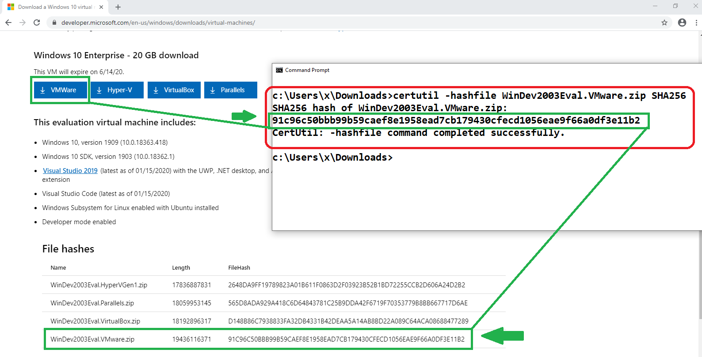
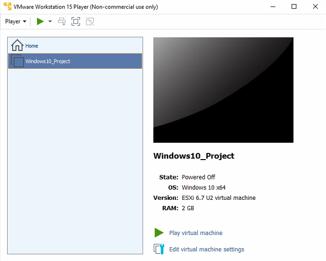
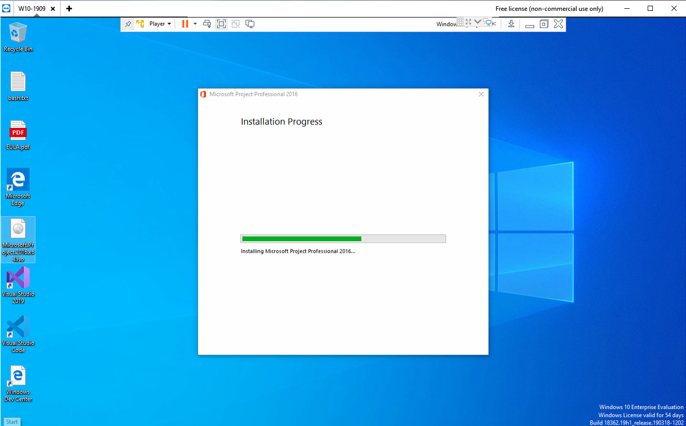
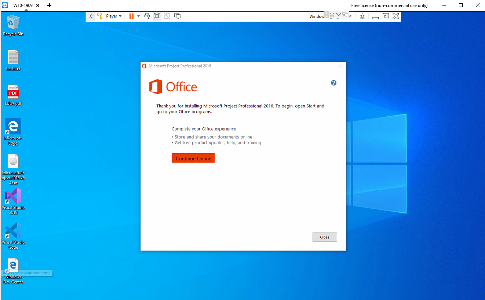
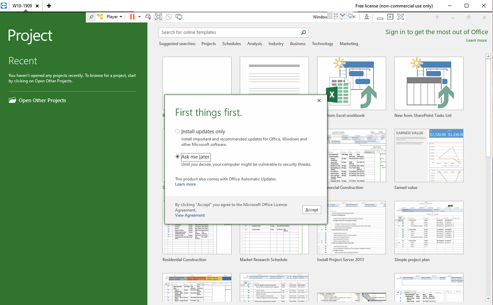

Installing Project 2016 on a Windows 10 VM using VMWare Workstation Player.
We first have to install VMWare Workstation Player 15.
The next step is to download the VMWare virtual machine from:
right here. This may take around one hour depending on your internet connection download speed.
Remember to verify the file integrity by using the certutil.exe command.
See picture below.

The zip file has to be unzipped. This takes a long time (around 20 minutes).
You'll find three files.
Now you can finally open the virtual machine with VMWare Workstation Player. You'll just need to point to the unzipped folder. The import task takes around 10 minutes. Be patient.
At this point, before playing the Windows 10 VM, you may want to edit the virtual machine settings to add more RAM to the W10 VM.

From within the VM go to https://tinyurl.com/idt2020, Project 2016 and download the Project 2016 ISO file (and mount it). Install Project 2016.


Start Project 2016 and do the textbook labs.
